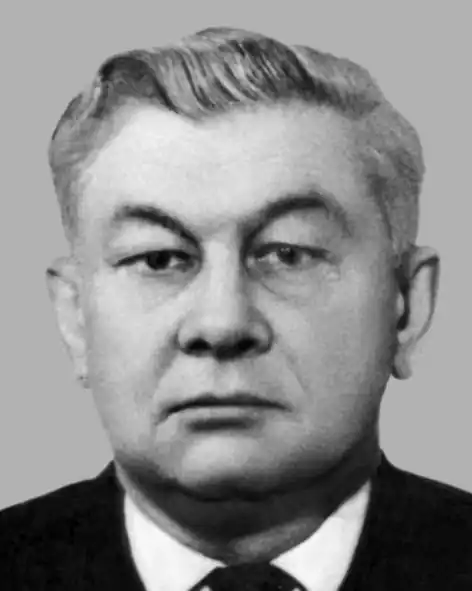

Кудієвський Костянтин Гнатович народився в м. Цюрупинську в сім'ї службовця.
Учасник Великої Вітчизняної війни, нагороджений бойовими орденами, медалями. Закінчив вище військово-морське училище. Служив на Північному флоті, де і почалася його літературна діяльність. Працював у редакціях газет "Красный флот", "Красная звезда", "Советская культура", журналів "Советская Украина", "Радуга". Був головним редактором сценарної редколегії Комітету по кінематографії Ради Міністрів України (Держкіно України) та головним редактором Київської кіностудії ім. О.П. Довженко.
Кудієвський К.Г. писав російською мовою. З дитинства майбутнього письменника захопило море, яке стало для нього джерелом думок і почуттів. Перше його друковане видання — книжка оповідань і повістей "Североморцы" (1954 р.). Кудієвському К.Г. була цікавою кожна людина, з якою він зустрічався в житті. Тому він так добре знав життя, тому у його романах і повістях так широко і так щиро розкривається неповторний світ і краса любові, яку його герої проносять через літа і випробування. За книгу "Легенда о Летучем голландце" письменник удостоєний премії ім. П.Г. Тичини "Чуття єдиної родини". Повість "Водоросли цветут в глубинах" розповідає про сучасне життя моряків з населеного пункту на побережжі Азовського моря. Повість "Окнами в звезды" присвячена злободенним проблемам сучасності: охороні оточуючого середовища, вихованню у молоді почуття відповідальності за долю рідного краю. У центрі твору "Линкор "Амазонка" — долі трьох лейтенантів, які люблять батьківщину і морську службу. Долі їхні, звичайно, надто різні... Про щоб не розповідав К. Кудієвський — чи про всесвіт моря, важких пригод і морського життя, чи про людей і степову природу Таврії — в його розповідях звучать ліричні ноти романтичного сприйняття життя. Помер К.Г. Кудієвський у 1992 році в м. Києві, там же і похований. Автор книжок оповідань та повістей "Североморцы" (1954), "Обгоняющая ветер" (1957), "Водоросли цветут в глубинах" (1959), "Ураган назовите "Марией" (1969); кіноповісті "Сімнадцятий трансатлантичний" (1972); романів "Песня синих морей" (роман-легенда,1962), "Горькие туманы Атлантики" (1974), "Легенда о Летучем голландце" (1979), "Летние сны в зимние ночи" (1982).